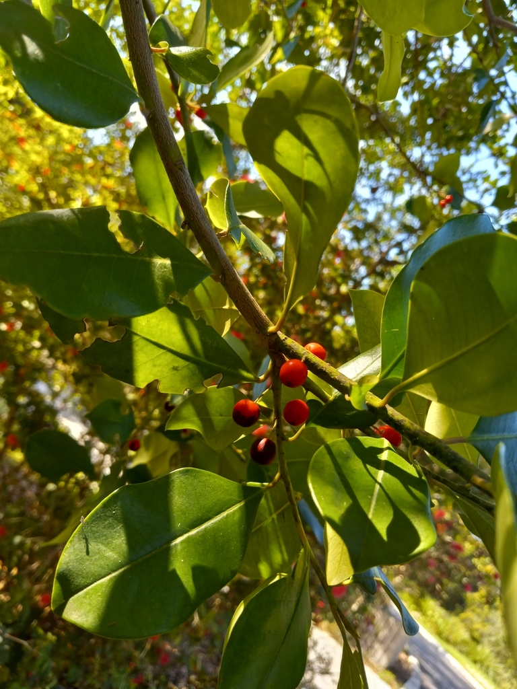

- Only female trees produce the berries — and only if a male tree is nearby for pollination. One male can serve multiple females within about 50 feet.
- The berries that are toxic to humans are safe for birds — Cedar Waxwings, American Robins, and Mockingbirds can eat them without harm due to differences in digestive physiology.
- Overripe holly berries — including native Ilex species — ferment on the branch and have been documented intoxicating Cedar Waxwings, which then fly erratically and sometimes collide with windows.
- One of the few native trees that delivers reliable winter color to the park when almost nothing else is fruiting.
Native to the coastal plains of the southeastern United States, south into Mexico and Cuba. In Florida found throughout the state in swamps, wet hammocks, pond edges, and rich moist soils — often growing alongside Bald Cypress and Red Maple.
- The Dahoon Holly is the Florida native answer to the non-native English Holly that decorates Christmas cards — it does everything that imported holly does ornamentally, while doing far more ecologically, requiring no irrigation once established, and tolerating standing water that would kill most trees.
- The berries are toxic to humans but evolved specifically for bird dispersal — birds that eat them pass the seeds, often dropping them into ideal moist habitats away from the parent tree. The toxin that deters mammals is irrelevant to bird digestive chemistry, making this a food source exclusive to the animals best suited to spread it.
- Overripe berries on Ilex species have been confirmed to ferment on the branch to alcohol levels significant enough to intoxicate Cedar Waxwings — National Wildlife Health Center testing found berry samples with ethanol levels sufficient to produce compromised flight behavior. Tipsy waxwings are a real phenomenon and a real window-strike hazard in winter.
- The species epithet cassine likely derives from Cassina, the common name for the related Ilex vomitoria (Yaupon Holly) — whose leaves were brewed into the Black Drink, a high-caffeine ceremonial beverage used by southeastern Indigenous peoples. Dahoon itself was also occasionally used this way.
The Dahoon Holly is one of the park's most important winter wildlife plants. Female trees carry dense clusters of red drupes that ripen in fall and persist through winter when most other food sources are exhausted — feeding Cedar Waxwings, American Robins, mockingbirds, bluebirds, and thrushes during their most food-stressed months.
The spring flowers are small and white but excellent nectar sources for bees and specialist pollinators in the Aquifoliaceae family. The dense evergreen canopy provides important year-round roosting and nesting cover. As a wet-site native alongside the Bald Cypress at the pond edge, it anchors the park's winter bird-watching value.
plants are either male or female. Only female trees produce berries, and only when a male tree is present nearby. One male can pollinate multiple females within about 50 feet.
Small, white, four to five petals, appearing in spring. Inconspicuous but valuable to native bees and specialist pollinators.
Bright red (occasionally orange or yellow) drupes about ¼ inch in diameter, ripening in fall and persisting through winter. Borne in dense clusters along the branches. Toxic to humans; safe for birds.
Evergreen, 2 to 3 inches long, narrow elliptic, slightly toothed near the tip. Glossy dark green above, paler below.
Smooth, grayish.
In fall and winter, the bright red berry clusters against glossy evergreen foliage are unmistakable — and worth watching for waxwing flocks that descend to strip the berries. Compare this native holly with the park's other winter fruit producers. Note the narrow elliptic leaf profile that distinguishes Dahoon from American Holly.
The bright red berries are a critical winter food for birds, but people should not eat them — doing so causes nausea, vomiting, and diarrhea.
It's a minor, not life-threatening reaction in small amounts, but children are drawn to the berries, so supervise accordingly.
The berries have the same effect on dogs — vomiting and diarrhea if eaten (holly, Ilex). Keep pets from grazing on fallen fruit.


- © teschaim (CC-BY-NC), via iNaturalist
- © Randall Carter (CC-BY-NC), via iNaturalist